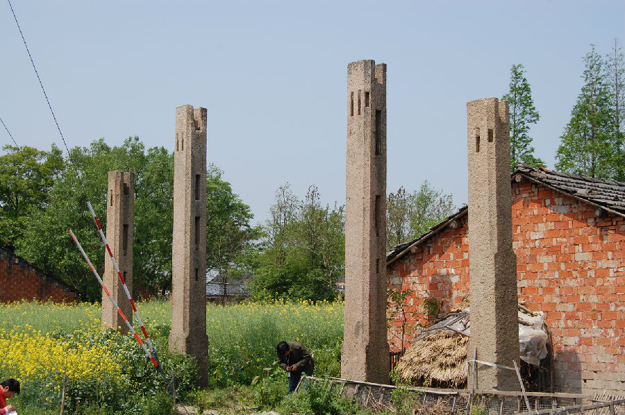

嘉兴市文物保护网 · 市级文物保护点 · 2020-11-09 · 原文

姜家残牌坊位于嘉兴市南湖区新丰镇乌桥村牌楼浜自然村。据当地人介绍为明代遗物，东西向并排竖立，目前牌楼仅存四根石柱，石柱为花岗石材质，其余部分文革时被破坏。中间两根石柱高5.35米，柱径面积为0.52×0.52平方米；两侧两根石柱高4.35米，柱径面积为0.50×0.50平方米。中间两根石柱间距3.97米，侧柱与中柱间距1.90米，石柱上有四处卯口，该残牌楼在嘉兴地区发现的牌楼中规模最大，虽然破损严重，但仍有很高的历史价值。2009年公布为市级文保点。